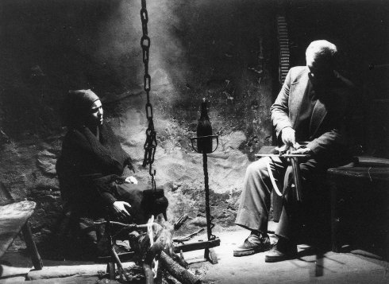

Cinema Português I
The school of reis
Freitag 12 okt 18.30 Filmmuseum München
Das Erbe der legendären portugiesischen Filmemacher António Reis und Margarida Cordeiro steht im Fokus der 13. Ausgabe von UNDERDOX. In zwei Programmen, die in Zusammenarbeit mit Miguel Valverde (Festival Indielisboa) entstanden, werden die Traditionen des portugiesischen Kinos nach der Diktatur und ihre Einflüsse auf die junge Generation heute vorgestellt.
Costa, Gomes und Rodrigues sind Schüler des einflussreichen, jedoch hierzulande kaum bekannten portugiesischen Filmemachers António Reis, der mit seiner Frau, der Psychiaterin Margarida Cordeiro, die wichtigsten Werke unmittelbar nach der Salazar-Diktatur schuf. Reis lehrte von 1977 bis zu seinem Tod 1991 an der Escola Superior de Teatro e Cinema. Nach ihm wurde die "School of Reis" (Haden Guest, Harvard Film Institute) und der unverwechselbare Stil eines ethnographischen Kinos benannt, das narrativ befreit hypnotisch-suggestive Ikonographien hervorbrachte, die gleichermaßen sinnlich wie radikal wirken.
Der 2003 verstorbene João César Monteiro schuf nach ethnographischen Filmen, die in direktem Reis-Einfluss entstanden waren, ein für Portugal ungewohnt sarkastisches und sozialkritisches Werk. Reis und Cordeiro hatten ihrerseits bei Manuel de Oliveira und den Begründern des Cinema Novo, Fernando Lopes und Paolo Rocha, gelernt, so dass auch die ruhmreichen Anfänge des lusitanischen Kinos auf das heutige Filmschaffen nachwirken.
(Dunja Bialas)
Sophia de Mello Breyner Andresen
Quem Espera por Sapatos de Defunto Morre Descalço
Whoever Runs After a Dead Man's Shoes Dies Barefoot
Jaime
A Mãe
The Mother

Passeio com o Johnny Guitar
Promenade with Johnny Guitar
O Bestiário ou o Cortejo do Orfeu
Bestiary, Or the Parade of Orpheus
Lettera Amorosa
|
João
César Monteiro
|
|
Ein Mann erhält Besuch von einer jungen Frau, die ihm Geschenke bringt.
|